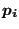

Next: Node-to-Face Penalty Contact Up: Mathematical description of a Previous: Shell knot Contents
A knot generally consists of one or more expansions of one and the same node, leading to a cloud of nodes . In the previous two sections knots were considered consisting of the expanded nodes of just one beam element or just one shell element. Generally, a knot will be the result of several beam and shell elements leading to a cloud of nodes in three-dimensional space. In order to determine the dimensionality of this cloud the first and second order moments of inertia are calculated leading to the location of the center of gravity and the second order moments about the center of gravity. The principal values of the second order moment matrix can be used to catalogue the dimensionality of the nodal cloud: if the lowest two principal values are zero the dimensionality is one (i.e. the nodes lie on a line as for the shell knot), if only the lowest one is zero the dimensionality is two (i.e. the nodes lie in a plane as for a beam knot). Else, the dimensionality is three. If the dimensionality corresponds to the highest dimensionality of the single elements involved, the formulation corresponding to that dimensionality is used.
If the dimensionality of the nodal cloud exceeds the highest dimensionality of the single elements, the shell knot formulation (isotropic expansion) is used. The reason for this is that the knot is supposed to be physically rigid, i.e. the relative angular position of the constituing elements should not change during deformation. Using the beam knot formulation leads to anisotropic stretching, which changes this relative angular position.